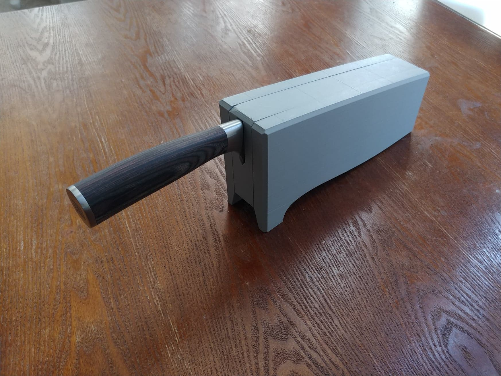
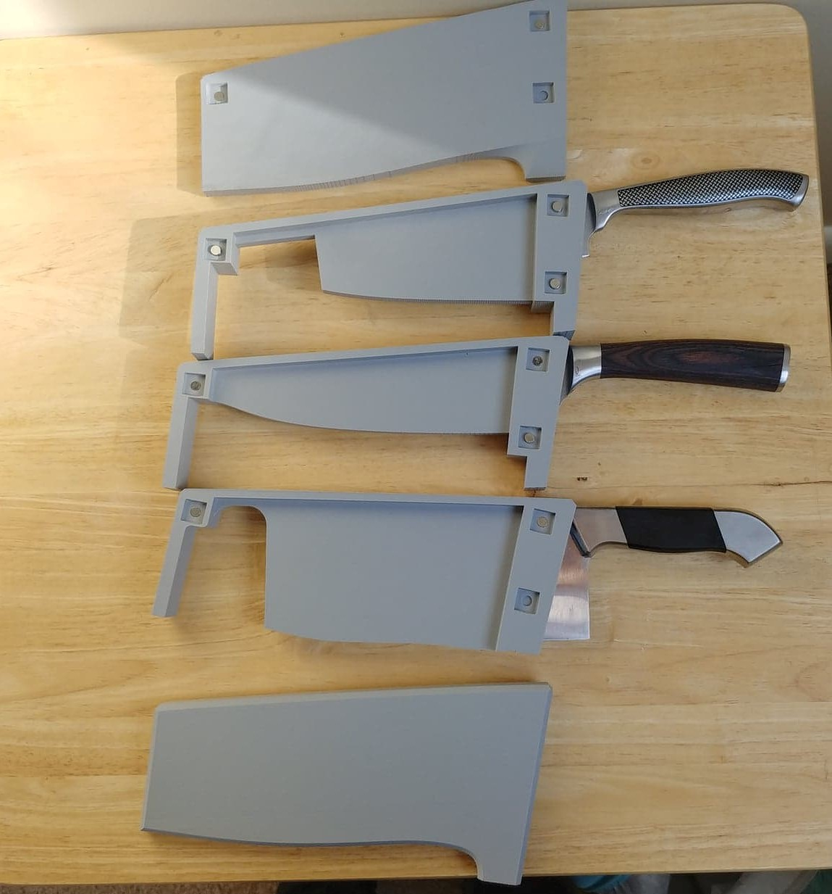

I didn't want to buy a knife block.
What happens when I own more knives than it has slots, or buy a chef's knife that doesn't fit any of them? Fortunately, there was no need to spend $30 on a knife block when I had already spent far more on a 3D printer.

As a college student, I had to design with the future in mind. I had no idea which kitchen knives I would end up with, so the knife block needed to adapt. That is why I made it completely modular.

Apart from the magnetic interfaces and an overall size envelope, each section of the block can be customized to fit any knife I happen to buy (within reason). All I need to do is adjust the template model and print. I also designed the magnets to self-align, so the modules snap together with a satisfying click.
Although I only had three knives at the time, I was quite happy with the overall design. In theory, I could keep adding modules until it became more of a knife bookcase than a knife block, but I doubt that will be necessary. If I were to do this again, I would add a fourth magnet to each interface. The blocks are reasonably secure with three, but four would give me more confidence. The only other change isn't a design issue: I would stop myself from opening the window while the parts were printing. The cold night air warped them slightly, but since they work and would take a lot of plastic to reprint, I kept them. Even so, the uneven tops of the modules bother me a little more every time I see them, so I may reprint them sooner or later.